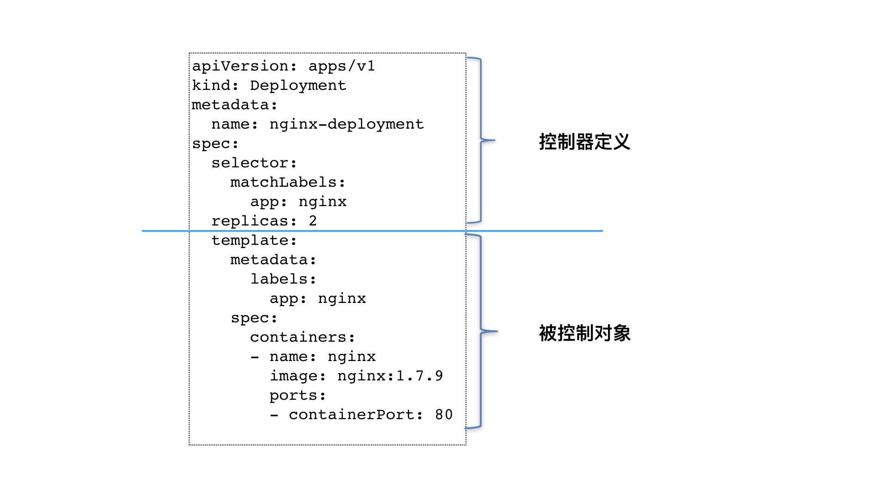

- 00 开篇词 打通“容器技术”的任督二脉.md.html
- 01 预习篇 · 小鲸鱼大事记（一）：初出茅庐.md.html
- 02 预习篇 · 小鲸鱼大事记（二）：崭露头角.md.html
- 03 预习篇 · 小鲸鱼大事记（三）：群雄并起.md.html
- 04 预习篇 · 小鲸鱼大事记（四）：尘埃落定.md.html
- 05 白话容器基础（一）：从进程说开去.md.html
- 06 白话容器基础（二）：隔离与限制.md.html
- 07 白话容器基础（三）：深入理解容器镜像.md.html
- 08 白话容器基础（四）：重新认识Docker容器.md.html
- 09 从容器到容器云：谈谈Kubernetes的本质.md.html
- 10 Kubernetes一键部署利器：kubeadm.md.html
- 11 从0到1：搭建一个完整的Kubernetes集群.md.html
- 12 牛刀小试：我的第一个容器化应用.md.html
- 13 为什么我们需要Pod？.md.html
- 14 深入解析Pod对象（一）：基本概念.md.html
- 15 深入解析Pod对象（二）：使用进阶.md.html
- 16 编排其实很简单：谈谈“控制器”模型.md.html
- 17 经典PaaS的记忆：作业副本与水平扩展.md.html
- 18 深入理解StatefulSet（一）：拓扑状态.md.html
- 19 深入理解StatefulSet（二）：存储状态.md.html
- 20 深入理解StatefulSet（三）：有状态应用实践.md.html
- 21 容器化守护进程的意义：DaemonSet.md.html
- 22 撬动离线业务：Job与CronJob.md.html
- 23 声明式API与Kubernetes编程范式.md.html
- 24 深入解析声明式API（一）：API对象的奥秘.md.html
- 25 深入解析声明式API（二）：编写自定义控制器.md.html
- 26 基于角色的权限控制：RBAC.md.html
- 27 聪明的微创新：Operator工作原理解读.md.html
- 28 PV、PVC、StorageClass，这些到底在说啥？.md.html
- 29 PV、PVC体系是不是多此一举？从本地持久化卷谈起.md.html
- 30 编写自己的存储插件：FlexVolume与CSI.md.html
- 31 容器存储实践：CSI插件编写指南.md.html
- 32 浅谈容器网络.md.html
- 33 深入解析容器跨主机网络.md.html
- 34 Kubernetes网络模型与CNI网络插件.md.html
- 35 解读Kubernetes三层网络方案.md.html
- 36 为什么说Kubernetes只有soft multi-tenancy？.md.html
- 37 找到容器不容易：Service、DNS与服务发现.md.html
- 38 从外界连通Service与Service调试“三板斧”.md.html
- 39 谈谈Service与Ingress.md.html
- 40 Kubernetes的资源模型与资源管理.md.html
- 41 十字路口上的Kubernetes默认调度器.md.html
- 42 Kubernetes默认调度器调度策略解析.md.html
- 43 Kubernetes默认调度器的优先级与抢占机制.md.html
- 44 Kubernetes GPU管理与Device Plugin机制.md.html
- 45 幕后英雄：SIG-Node与CRI.md.html
- 46 解读 CRI 与 容器运行时.md.html
- 47 绝不仅仅是安全：Kata Containers 与 gVisor.md.html
- 48 Prometheus、Metrics Server与Kubernetes监控体系.md.html
- 49 Custom Metrics_ 让Auto Scaling不再“食之无味”.md.html
- 50 让日志无处可逃：容器日志收集与管理.md.html
- 51 谈谈Kubernetes开源社区和未来走向.md.html
- 52 答疑：在问题中解决问题，在思考中产生思考.md.html
- 特别放送 2019 年，容器技术生态会发生些什么？.md.html
- 特别放送 基于 Kubernetes 的云原生应用管理，到底应该怎么做？.md.html
- 结束语 Kubernetes：赢开发者赢天下.md.html
- 捐赠
16 编排其实很简单：谈谈“控制器”模型
你好，我是张磊。今天我和你分享的主题是：编排其实很简单之谈谈“控制器”模型。
在上一篇文章中，我和你详细介绍了Pod的用法，讲解了Pod这个API对象的各个字段。而接下来，我们就一起来看看“编排”这个Kubernetes项目最核心的功能吧。
实际上，你可能已经有所感悟：Pod这个看似复杂的API对象，实际上就是对容器的进一步抽象和封装而已。
说得更形象些，“容器”镜像虽然好用，但是容器这样一个“沙盒”的概念，对于描述应用来说，还是太过简单了。这就好比，集装箱固然好用，但是如果它四面都光秃秃的，吊车还怎么把这个集装箱吊起来并摆放好呢？
所以，Pod对象，其实就是容器的升级版。它对容器进行了组合，添加了更多的属性和字段。这就好比给集装箱四面安装了吊环，使得Kubernetes这架“吊车”，可以更轻松地操作它。
而Kubernetes操作这些“集装箱”的逻辑，都由控制器（Controller）完成。在前面的第12篇文章《牛刀小试：我的第一个容器化应用》中，我们曾经使用过Deployment这个最基本的控制器对象。
现在，我们一起来回顾一下这个名叫nginx-deployment的例子：
apiVersion: apps/v1
kind: Deployment
metadata:
name: nginx-deployment
spec:
selector:
matchLabels:
app: nginx
replicas: 2
template:
metadata:
labels:
app: nginx
spec:
containers:
- name: nginx
image: nginx:1.7.9
ports:
- containerPort: 80
这个Deployment定义的编排动作非常简单，即：确保携带了app=nginx标签的Pod的个数，永远等于spec.replicas指定的个数，即2个。
这就意味着，如果在这个集群中，携带app=nginx标签的Pod的个数大于2的时候，就会有旧的Pod被删除；反之，就会有新的Pod被创建。
这时，你也许就会好奇：究竟是Kubernetes项目中的哪个组件，在执行这些操作呢？
我在前面介绍Kubernetes架构的时候，曾经提到过一个叫作kube-controller-manager的组件。
实际上，这个组件，就是一系列控制器的集合。我们可以查看一下Kubernetes项目的pkg/controller目录：
$ cd kubernetes/pkg/controller/
$ ls -d */
deployment/ job/ podautoscaler/
cloud/ disruption/ namespace/
replicaset/ serviceaccount/ volume/
cronjob/ garbagecollector/ nodelifecycle/ replication/ statefulset/ daemon/
...
这个目录下面的每一个控制器，都以独有的方式负责某种编排功能。而我们的Deployment，正是这些控制器中的一种。
实际上，这些控制器之所以被统一放在pkg/controller目录下，就是因为它们都遵循Kubernetes项目中的一个通用编排模式，即：控制循环（control loop）。
比如，现在有一种待编排的对象X，它有一个对应的控制器。那么，我就可以用一段Go语言风格的伪代码，为你描述这个控制循环：
for {
实际状态 := 获取集群中对象X的实际状态（Actual State）
期望状态 := 获取集群中对象X的期望状态（Desired State）
if 实际状态 == 期望状态{
什么都不做
} else {
执行编排动作，将实际状态调整为期望状态
}
}
在具体实现中，实际状态往往来自于Kubernetes集群本身。
比如，kubelet通过心跳汇报的容器状态和节点状态，或者监控系统中保存的应用监控数据，或者控制器主动收集的它自己感兴趣的信息，这些都是常见的实际状态的来源。
而期望状态，一般来自于用户提交的YAML文件。
比如，Deployment对象中Replicas字段的值。很明显，这些信息往往都保存在Etcd中。
接下来，以Deployment为例，我和你简单描述一下它对控制器模型的实现：
Deployment控制器从Etcd中获取到所有携带了“app: nginx”标签的Pod，然后统计它们的数量，这就是实际状态；
Deployment对象的Replicas字段的值就是期望状态；
Deployment控制器将两个状态做比较，然后根据比较结果，确定是创建Pod，还是删除已有的Pod（具体如何操作Pod对象，我会在下一篇文章详细介绍）。
可以看到，一个Kubernetes对象的主要编排逻辑，实际上是在第三步的“对比”阶段完成的。
这个操作，通常被叫作调谐（Reconcile）。这个调谐的过程，则被称作“Reconcile Loop”（调谐循环）或者“Sync Loop”（同步循环）。
所以，如果你以后在文档或者社区中碰到这些词，都不要担心，它们其实指的都是同一个东西：控制循环。
而调谐的最终结果，往往都是对被控制对象的某种写操作。
比如，增加Pod，删除已有的Pod，或者更新Pod的某个字段。这也是Kubernetes项目“面向API对象编程”的一个直观体现。
其实，像Deployment这种控制器的设计原理，就是我们前面提到过的，“用一种对象管理另一种对象”的“艺术”。
其中，这个控制器对象本身，负责定义被管理对象的期望状态。比如，Deployment里的replicas=2这个字段。
而被控制对象的定义，则来自于一个“模板”。比如，Deployment里的template字段。
可以看到，Deployment这个template字段里的内容，跟一个标准的Pod对象的API定义，丝毫不差。而所有被这个Deployment管理的Pod实例，其实都是根据这个template字段的内容创建出来的。
像Deployment定义的template字段，在Kubernetes项目中有一个专有的名字，叫作PodTemplate（Pod模板）。
这个概念非常重要，因为后面我要讲解到的大多数控制器，都会使用PodTemplate来统一定义它所要管理的Pod。更有意思的是，我们还会看到其他类型的对象模板，比如Volume的模板。
至此，我们就可以对Deployment以及其他类似的控制器，做一个简单总结了：

如上图所示，类似Deployment这样的一个控制器，实际上都是由上半部分的控制器定义（包括期望状态），加上下半部分的被控制对象的模板组成的。
这就是为什么，在所有API对象的Metadata里，都有一个字段叫作ownerReference，用于保存当前这个API对象的拥有者（Owner）的信息。
那么，对于我们这个nginx-deployment来说，它创建出来的Pod的ownerReference就是nginx-deployment吗？或者说，nginx-deployment所直接控制的，就是Pod对象么？
这个问题的答案，我就留到下一篇文章时再做详细解释吧。
总结
在今天这篇文章中，我以Deployment为例，和你详细分享了Kubernetes项目如何通过一个称作“控制器模式”（controller pattern）的设计方法，来统一地实现对各种不同的对象或者资源进行的编排操作。
在后面的讲解中，我还会讲到很多不同类型的容器编排功能，比如StatefulSet、DaemonSet等等，它们无一例外地都有这样一个甚至多个控制器的存在，并遵循控制循环（control loop）的流程，完成各自的编排逻辑。
实际上，跟Deployment相似，这些控制循环最后的执行结果，要么就是创建、更新一些Pod（或者其他的API对象、资源），要么就是删除一些已经存在的Pod（或者其他的API对象、资源）。
但也正是在这个统一的编排框架下，不同的控制器可以在具体执行过程中，设计不同的业务逻辑，从而达到不同的编排效果。
这个实现思路，正是Kubernetes项目进行容器编排的核心原理。在此后讲解Kubernetes编排功能的文章中，我都会遵循这个逻辑展开，并且带你逐步领悟控制器模式在不同的容器化作业中的实现方式。
思考题
你能否说出，Kubernetes使用的这个“控制器模式”，跟我们平常所说的“事件驱动”，有什么区别和联系吗？
感谢你的收听，欢迎你给我留言，也欢迎分享给更多的朋友一起阅读。
© 2019 - 2023 Liangliang Lee. Powered by gin and hexo-theme-book.